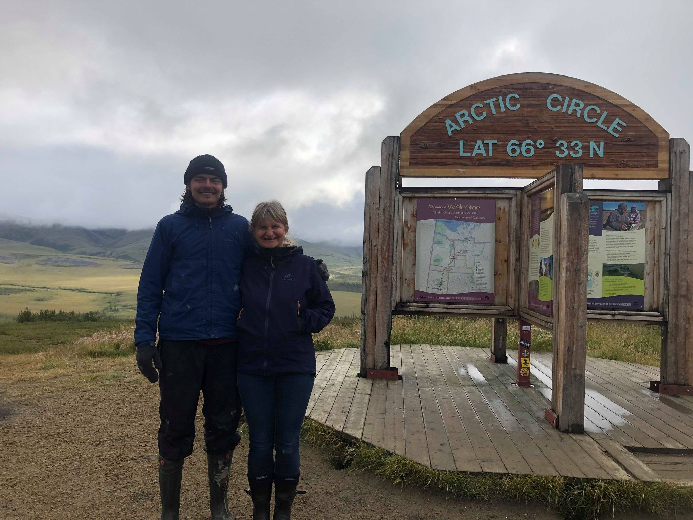

Math and Computer Science student at McGill University. Interested in Mathematics, Software Development, and Design.
Hi! I am currently in my sophomore year at McGill university, pursuing a degree in Mathematics and Computer Science. I am generally interested in applied math, which spans from finance, to physics, to machine learning. For a distilled list of experience, here is my CV.
Right now I work in Dr. Adrian Liu’s lab, where we are trying to apply image segmentation algorithms to extract foreground contaminants from 21cm cosmology observations. I was also working on tensor network optimization methods for detecting quantum entanglement with Dr. Gantumur Tsogtgerel at McGill University.
When I’m not doing research I like to write code (or pretty much anything) in vim, learn about design, and explore various branches of applied math. This site is meant to document some of those findings.
When I get tired of staring at a computer screen I like to read or go running. In extreme cases of screen overload I have also tree-planted in Northern Ontario, and hitchhiked around the Western Canadian Arctic.

Photo of me and my friend Gudrun who gave me a ride on the Dempster Highway.